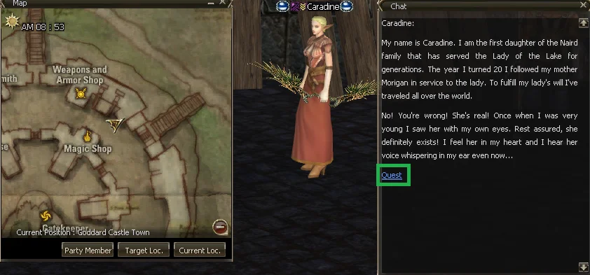
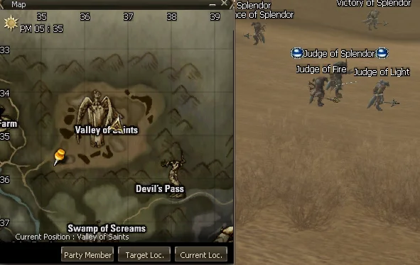
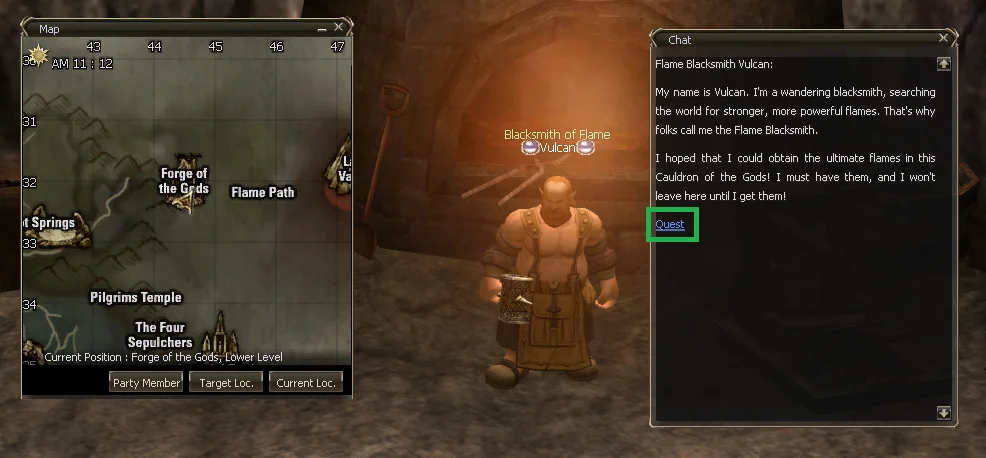
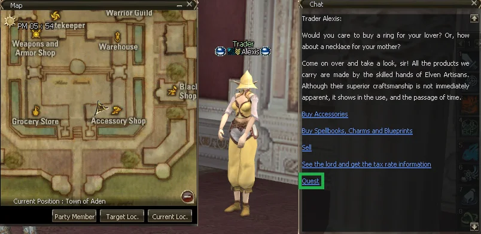
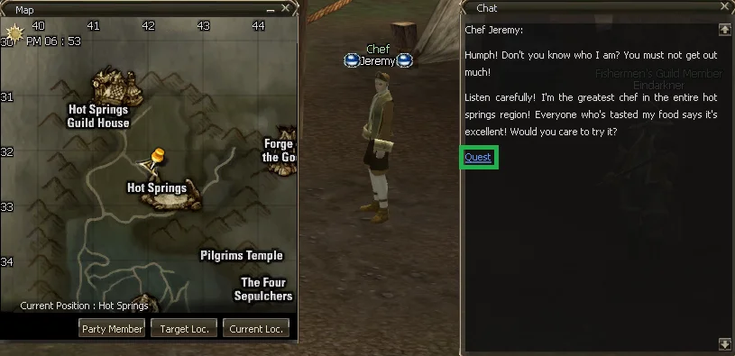

Hola! Bienvenidos a esta Mini Wiki del Lineage 2 C4
Hecha con la intención de ayudar a los que menos sabemos y cubrir la falta de
información de esta crónica tan apreciada por sus fans.
Lista de contenidos
- Buffs (todos excepto buffs propios EJ: Ultimate Defense + de invocaciones y Cubics)
- Noblesse (beneficios + guía completa)
- Clases (listado, descripciones, combos)
- Informacion Miscelánea (atributos+dyes, quests importantes, tips)
- Glosario de items, acrónimos y clases
- Mapas del juego online o descargables
- Info sobre esta web
Referencias:
[Verde para los beneficiales a los Fighter] [Turquesa para los beneficiales a los Mystic] [Amarillo para tipos generales] [Lila para tipos especiales]
Songs
Buffs que se pasan a través de Party. En su mayoria mejoran defensivamente. Provienen de la clase Sword Singer.
Song of Earth
+ P. Def
Song of Life
+ Regen HP
Song of Water
+ Evasion
Song of Warding
+ M. Def
Song of Wind
+ Speed
Song of Vitality
+ HP
Song of Invocation
+ Resist Dark
Song of Storm Guard
+ Resist Wind
Song of Flame Guard
+ Resist Fire
Song of Hunter
+ Critical Rate Físico
Song of Champion
- Consumo MP y tiempo de reuso Skill Físico
Song of Renewal
+ Regen MP, - Consumo MP y tiempo de reuso Skill Mágico
Song of Meditation
- Consumo MP y tiempo de reuso Skill Físico y Mágico
Song of Vengeance
Refleja % daño Melee recibido
Dances
Buffs que se pasan a través de Party. En su mayoria mejoran ofensivamente. Provienen de la clase Blade Dancer.
Dance of Warrior
+ P. Atk
Dance of Fire
+ Critical Damage
Dance of Fury
+ Atk. Spd.
Dance of Vampire
+ Vampiric
Dance of Inspiration
+ Accuracy
Dance of Light
+ Holy/Sacred P. Atk
Dance of Concentration
+ Casting Spd. - Magic Cancel Rate
Dance of Mystic
+ M. Atk
Dance of Siren
+ Critical Rate Mágico
Dance of Protection
+ Resist daño en area
Dance of Aqua Guard
+ Resist Aqua
Dance of Earth Guard
+ Resist Earth
Dance of Shadow
Los mobs no atacan primero
Dance of Medusa
(Activo) Petrifica mobs cercanos
Chants
Buffs que se pasan a través de Party. Son bastante orientados a los Luchadores. Provienen de la clase Warcryer.
Chant of Battle
+ P. Atk
Chant of Fury
+ Atk. Spd
Chant of Rage
+ Critical Damage
Chant of Predator
+ Critical Rate Físico
Chant of Eagle
+ Accuracy
Chant of Vampire
+ Vampiric
Chant of Victory
- Speed
+ Hp, P. Atk, P. Def, Accuracy, Atk.
Spd.
+ M. Atk, M. Def, Casting
Spd
Chant of Flame
+ Casting Spd.
Chant of Fire
+ M. Def
Chant of Shielding
+ P. Def
Chant of Evasion
+ Evasion
Chant of Spirit
+ Resist Buff Cancel y Debuff
Chant of Revenge
Refleja % daño Melee recibido
Chant of Life
Mejora la Regen HP. No cuenta contra el limite de Buffs
Pa'agrio
Buffs que se pasan a través de Alianza. Son mixtos. Provienen de la clase Overlord. Pueden Curar CP masivamente.
Power of Pa'agrio
+ P. Atk
Sight of Pa'agrio
+ Accuracy
Eye of Pa'agrio
+ Critical Damage
Rage of Pa'agrio
- P. Def, M. Def
+ P. Atk, Atk. Spd. + M. Atk, Casting Spd
Wisdom of Pa'agrio
+ Casting Spd.
Soul of Pa'agrio
+ M. Atk
Blessing of Pa'agrio
+ P. Def
Glory of Pa'agrio
+ M. Def
Shield of Pa'agrio
+ Shield Def
Tact of Pa'agrio
+ Evasion
Speed of Pa'agrio
+ Speed
Heart of Pa'agrio
Mejora considerablemente la Regen HP. No cuenta contra el limite de Buffs
Honor of Pa'agrio
(Activo) Cura CP a los miembros de la alianza cercanos
Otros
Buffs que provienen de diferentes Clases. Estan en esta lista dado que pueden tirarselo a otro char sin restricciones.
Bless the Body
+ HP
Bless the Soul
+ MP
Wind Walk
+ P. Atk
Body of Avatar
+ P. Atk
Shield
+ P. Def
Magic Barrier
+ M. Def
Bless Shield
+ Shield Def
Advanced Block
+ Rate Shield Def
Agility
+ Evasion
Mental Shield
+ Resist Hold, Sleep, Fear y Mental Atk
Resist Shock
+ Resist a estado de Shock
Resist Aqua
+ Resist a ataques Aqua
Resist Fire
+ Resist a ataques Fire
Resist Poison
+ Resist a ataques Poison
Resist Wind
+ Resist a ataques Wind
Decrease Weight
+ Limite de peso
Invigor
+ Resist a Bleed
Kiss of Eva
+ Capacidad respiratoria
Regeneration
+ Regen HP
Prayer
+ Curacion al ser curado
Acumen
+ Casting Spd.
Concentration
- Cancel de casteo
Empower
+ M. Atk
Wild Magic
+ Critical Rate Mágico
Berserker Spirit
- P. Def, M. Def
+ P. Atk, Atk. Spd. + M. Atk, Casting Spd
Death Whisper
+ Critical Damage
Focus
+ Critical Rate Físico
Haste
+ Atk. Spd.
Guidance
+ Accuracy
Might
+ P. Atk
Vampiric Rage
+ Vampiric
Holy Weapon
Atributo Holy en magias y ataques físicos
3ra Clase, Invocaciones y Cubics
Buffs que provienen de 3ras Clases, Gata y Unicornio/Seraphim, y los Cubics existentes.
¡Los Buff de la Gata y Unicornio y los Mass Summon Cubic se pasan a través de PARTY!
Arcante Protection
+ Resist a Buff Cancel y Debuffs
Divine Protection
+ Resist Dark
Elemental Protection
+ Resist Fire, Water, Wind y Earth
Prophecy of Fire
+ P. Atk, Atk. Spd.,
Accuracy
+ HP, P. Def, Resist Debuff
- Speed
Prophecy of Water
+ M. Atk, Casting Spd.,
Critical Rate Mágico
+ MP Regen, M. Def, Resist Debuff
- Speed
Prophecy of Wind
+ P. Atk, Atk. Spd.,
Accuracy, Vampiric, Critical Damage hacia la espalda
+ Resist
Debuff
- Speed
Blessing of Queen
+ Critical Rate Físico, Critical Damage
Gift of Queen
+ P. Atk, Accuracy
Blessing of Seraphim
- Tiempo reuso Skill Mágico
Gift of Seraphim
+ Regen MP
Phantom Cubic
Baja el P. Atk, P. Def y Atk. Spd.
Mass Summon Phantom Cubic
Phantom Cubic se puede invocar para Party
Aqua Cubic
Hace daño periodicamente
Mass Summon Aqua Cubic
Aqua Cubic se puede invocar para Party
Storm Cubic
Hace daño
Mass Summon Storm Cubic
Storm Cubic se puede invocar para Party
Life Cubic
Recupera HP periodicamente
Spark Cubic
Stunea
Vampiric Cubic
Hace daño y cura con este
Binding Cubic
Paraliza
Viper Cubic
Envenena
La Noblesse es un set de Skills aprendidos luego de completar la saga de Quests "Path
Of A Noblesse, Possesor Of A Precious Soul". Es muy importante ya que es un hito
importante para cualquier PJ dispuesto a alcanzarla, al aportar Skills necesarios
para cualquier momento (Blessing of the Noblesse y Summon CP Potion) y un subset de
Skills para Asedios.
Además te da una tiara fachera!
- Blessing of the Noblesse - Retiene todos los Buffs que tenias en caso de que mueras.
- Summon CP Potion - Invoca 20 Greater CP Potion.
- Fortune of Noblesse - Baja la chance a tu Party de dropear un item en caso de Raid o Boss War.
- Build Advanced Headquarters - Establece un cuartel con doble de vida que ayuda con la recuperación y despacho de miembros de tu clan.
- Harmony of the Noblesse - Hace daño no elemental en área.
- Symphony of the Noblesse - Hace aun más daño no elemental en área.
- Strider Siege Assault - Ataque fuerte con un Strider a una puerta y pared de Castillo.
- Wyvern Aegis - Incrementa P. y M. Def al estar montado en un Wyvern.
- Possessor of a Precious Soul -
Requisitos:
Estar en Subclass en nivel 50 mínimo.
1 x Hellfire Oil + 5 x Lunargent [Costo
usual en servidores privados: 400kk por todo]
- 1) Habla con Talien en Aden
- 2) Habla con Gabrielle en Giran
- 3) Habla con Gilmore en Death Pass

- 4) Ve a Beehive (via GK de Dion a Monster Derby Track) y entra a la cueva y mata a Baraham, que te dará "Legend of Seventeen"
- 5) Vuelve con Talien
- 6) Habla con Kantabilon en Heine
- 7) Ve a Dragon Valley y mata Malruk Succubus / Turen hasta conseguir 10 "Malruk Succubus Claw"
- 8) Vuelve con Kantabilon
- 9) Vuelve con Talien
- 10) Habla con Stedmiel en Hunters Village
- 11) Vuelve con Talien
- 12) Habla con Virgil en Rune Castle Town (Habla con la GK a la izquierda apenas bajas luego de cruzar el puente)
- 13) Habla con Ogmar (al lado de Virgil)
- 14) Habla con Rahorakti en el Mystic Guild
- 15) Ve a Swamp of Screams y mata Splinter Stakato Drone hasta conseguir 5 "Crimson Moss"
- 16) Vuelve con Rahorakti
- 17) Habla con Kassandra (al lado de Virgil)
- 18) Habla con Virgil
- 19) Habla con Caradine en Goddard
- 
- 20) Habla con Noel
- 21) Debes traerle 1 x Hellfire Oil + 5 x Lunargent. En servidores privados usualmente podes comprar los items del GM Shop por 400kk y saltearte lo siguiente
- Debes recolectar los siguientes items
- 500 Moonstone Shard
- 60 Volcanic Ash
- 5 Quicksilver
- 100 Lava Stone
- 2 Sulfur
- 100 Demon's Blood
- 10 Blood Root
- Para encontrar donde obtener estos drop, consulta la sección "Descargas y Mapas" y chequea buscando los items en L2DATA
- 22) Una vez obtenido lo necesario, habla devuelta con Noel
- 23) Vuelve con Caradine que te dará "Virgil's Letter" ¡felicitaciones! Completaste la primera parte
- Possessor of a Precious Soul -
Requisitos:
Estar en Subclass en nivel 60 mínimo, haber finalizado la parte anterior
- 1) Habla con Virgil
- 2) Habka con Kassandra
- 3) Habla con Ogmar
- 4) Ve a Devil's Pass (ve por Varka Silenos Outpost o Swamp of Screams)
- 5) Habla con Mysterious Dawebprk Knight
- 6) "Habla" con todos los Corpse of Angel y cuando termines habla devuelta con Mysterious Dark Knight
- 7) Habla con Kalis al este de Ivory Tower
- 8) Habla con Matild al oeste de Ivory Tower
- 9) Vuelve con Kalis
- 10) Ve a Valley of Saints
- 11) Mata a 4 Restrainer of Glory para conseguir 4 Orb of Binding
- 12) Interactua con los 4 Cornerstone of Restraining
- 13) Interactua con el Fallen Unicorn luego de sacar los Cornerstone
- 14) Hablale devuelta al que aparece
- 15) Vuelve con Kassandra que te dará "Caradine's Letter" ¡felicitaciones! Completaste la segunda parte
- Possessor of a Precious Soul -
Requisitos:
Estar en Subclass en nivel 65 mínimo, haber finalizado la parte anterior
- 1) Habla con Caradine en Goddard
- 2) Habla con Ossian (está al lado)
- 3) Ve a Valley of Saints y mata "Pilgrim of Splendor" hasta que te dropee Ring of Goddess: Waterbinder, y "Judge of Splendor" hasta que te dropee Necklace of Goddess: Evergreen
- 
- 4) Vuelve con Ossian
- 5) Debes volver a Valley of Saints y matar al Raid Boss Flame of Splendor Barakiel. ¡Recordá que puedes estar en party y recibirlo al cooperar para matarla!
- 6) Una vez obtenido el Staff of Goddess: Rain Song al vencer a Barakiel, vuelve con Ossian
- 7) Habla con Ladd en Ivory Tower, que te dará "Caradine's Letter" ¡felicitaciones! Completaste la tercera y anteultima parte
- Possessor of a Precious Soul -
Requisitos:
Estar en Subclass en nivel 75 mínimo, haber finalizado la parte anterior
- 1) Habla con Caradine
- 2) Te teletransportará a un lugar, ahi debes hablar con Lady of the Lake
- ¡FELICITACIONES! Ahora sos parte de la Nobleza del Lineage 2
Recuerda que
usualmente en servidores privados se te permite cambiar entre elfos, habilita
Overlord y Warsmith como Subclass y no cambia el skin al cambiar/agregar una
Subclass! ATENTO igual a las restricciones que puedan tener!
Puedes elegir lo que esta en negrita como
Subclass cuando llegues a nivel 75 en una
Human
- Human Fighter
- Warrior
- Warlord
- Dreadnought
- Gladiator
- Duelist
- Warlord
- Human Knight
- Paladin
- Phoenix Knight
- Dark Avenger
- Hell Knight
- Paladin
- Rogue
- Treasure Hunter
- Adventurer
- Hawkeye
- Sagittarius
- Treasure Hunter
- Warrior
- Human Mystic
- Human Wizard
- Sorcerer
- Archmage
- Necromancer
- Soultaker
- Warlock
- Arcana Lord
- Sorcerer
- Cleric
- Bishop
- Cardinal
- Prophet
- Hierophant
- Bishop
- Human Wizard
Elf
- Elven Fighter
- Warrior
- Temple Knight
- Eva's Templar
- Sword Singer
- Sword Muse
- Temple Knight
- Elven Scout
- Plains Walker
- Wind Rider
- Silver Ranger
- Moonlight Sentinel
- Plains Walker
- Warrior
- Elven Mystic
- Elven Wizard
- Spellsinger
- Mystic Muse
- Elemental Summoner
- Elemental Master
- Spellsinger
- Elven Oracle
- Elven Elder
- Eva's Saint
- Elven Elder
- Elven Wizard
Dark Elf
- Dark Fighter
- Palus Knight
- Shillien Knight
- Shillien Templar
- Blade Dancer
- Spectral Dancer
- Shillien Knight
- Assassin
- Abyss Walker
- Ghost Hunter
- Phantom Ranger
- Ghost Sentinel
- Abyss Walker
- Palus Knight
- Dark Mystic
- Dark Wizard
- Spellhowler
- Storm Screamer
- Phantom Summoner
- Spectral Master
- Spellhowler
- Shillien Oracle
- Shillien Elder
- Shillien Saint
- Shillien Elder
- Dark Wizard
Orc
- Orc Fighter
- Raider
- Destroyer
- Titan
- Destroyer
- Monk
- Tyrant
- Grand Khavatari
- Tyrant
- Raider
- Orc Mystic
- Orc Shaman
- Overlord
- Dominator
- Warcryer
- Doomcryer
- Overlord
- Orc Shaman
Dwarf
- Dwarven Fighter
- Scavenger
- Bounty Hunter
- Fortune Seeker
- Bounty Hunter
- Artisan
- Warsmith
- Maestro
- Warsmith
- Scavenger
-Basado y adaptado de este post de WarCry-
Antes que nada, recuerden que el juego no fue diseñado
para Subclass acumulativas, por ende una combinación siempre va a ser superior a
otras. Asimismo, NO SIRVE mezclar el enfoque de
las subclasses entre PvP y PvE, ya que sería un desperdicio de
eficiencia. Debe ser o para uno o para lo otro.
Para saber a detalle las habilidades de cada Clase, chequea "Descargas y Mapas" y descarga el L2DATA.
Tanques
- Paladin
- Hecho para aguantar con Ultimate Defense y escudo y curar a costa de su vida. Se suele usar para bajarse el HP para usar Frenzy o Guts.
- Dark Avenger
- Hecho para combate cuerpo a cuerpo, con su mayor utilidad siendo el Ultimate Defense y el Reflect Damage, ya que no es tan optimo en cuanto a defensa como el Paladin al no tener buenas Skills de escudo.
- Temple Knight
- Hecho para la defensa mágica, con sustento via Life Cubic. Utilidad basada por su DEX y MEN util para Skills de Fighter.
- Shillien Knight
- Tiene Cubics ofensivos, más defensa mágica al tener buen MEN y buen STR para daño, siendo su mejor ventaja contra los magos y sus fuertes atributos raciales.
Luchadores
- Warlord
- Clase hecha y derecha para mobear, tiene el mejor aggro de mobs debido al Provoke, y tiene un muy buen set de Skills para polear, entre ellos Thrill Fight y War Cry.
- Gladiator
- Letal contra cualquier cosa a melee y puede kitear vida a distancia, es muy dependiente del mana y enfriamiento de los Skills.
- Sword Singer
- Originalmente diseñado para PVP, no rinde para PJ de uso directo PvP o PvE, sino para mochilas/buffer. Puede llegar a usarse coo ultima sub para melees o PvE, pero cuidado ya que hay mejores opciones.
- Blade Dancer
- Lo mismo que arriba.
- Destroyer
- Frenzy y Guts son lo más importante de esta Clase, ya que aumentan inmensamente el P. Atk y P. Def respectivamente.
- Tyrant
- Infaltable para cualquier Fighter, su DPS aportado gracias a los Totems y Fist Fury son inmensos, también posee CON alta.
- Bounty Hunter
- Para usar con Pole con Spoil, preferible para farmear drops específicos, ya que para mobear es sino mejor siempre el Warlord.
- Warsmith
- Pierde el Crystallize al poner otra sub, por ende solo es útil para un PJ craftero.
Dagueros
- Treasure Hunter
- Los mejores pasivos de combo de Critical Chance y Critical Power, inclusive Speed.
- Plains Walker
- Sirve para por su DEX alto, pero carece de Critical Power. No tiene Veil, pero posee Fake Dead.
- Abyss Walker
- Sirve para por su STR alto, pero carece de Critical Chance. No tiene Fake Dead, pero posee Veil.
Arqueros
- Hawkeye
- Tiene balance de daño y críticos, y tiene un buen set de Skills.
- Silver Ranger
- Tiene mejores críticos, pero carece por otros lados. DEX remarcable.
- Phantom Ranger
- Hecha para el daño, pero posee bajos críticos. STR remarcable.
Magos Nukers
- Sorcerer
- Daño elemental de fuego, estados de quemadura, AOE y Cancel.
- Necromancer
- Daño oscuro, poco WIT y MEN.
- Spellsinger
- Hace daño de agua y hielo, y tiene Solar Flare con Over Hit.
- Spellhowler
- Principal daño de tipo viento y oscuro, notable su Vampiric Claw. Importante buffearlo con Pony
- Overlord
- Mago de corto rango, mucho MEN. Tiene los mejores Skills para Magos Nukers, y hasta es usable de apoyo para PJ orientado a Fighter. Sus buffs son para Clan. Tienen buenos niveles de Armor Mastery Mágicos, Heavy Armor Mastery carente en otras clases. Cura CP, y tiene mejor Vampire que el Necromancer o el Spellhowler. Tiene Soul Cry y Soul Guard, que son útiles al aumentar el P. Atk. y P. Def, PERO consumen muchísimo mana.
Invocadores
- Warlock
- Su valor reside en poder invocar la Gatita, que aumenta la tasa y daño de Críticos Físicos.
- Elemental Summoner
- Su valor reside en poder invocar al Pony, que baja el tiempo de re uso de los Skills Mágicos. Se dice que transforma a los magos en armas automáticas... Imaginate.
- Phantom Summoner
- Enfocado al PvP para tankear con el Transfer Pain, y sus Cubic ofensivos.
Soportes
- Bishop
- Tiene las mejores curas del juego sin excepción y limpieza de debuffs.
- Prophet
- Variedad de buffs inclinados al Casting de Skills Mágicos, Atk. Spd.
- Elven Elder
- Similar al Shillien Elder, pero con buffs enfocados a la conservación de mana, pocas limpiezas de debuffs y poco mana base.
- Shillien Elder
- Buffs enfocados al daño mágico y sustentación física.
- Warcryer
- Similar al Overlord, el Warcryer esta inclinado a buffear a su Party y cubre una muy buena cantidad de buffs para Fighters. Tiene Soul Cry, lo cual lo hace tentador para usar en PJ Fighter.
Combos para PvP (pker/para agite)
- Mago de Drain
Overlord + Phantom Summoner + Temple Knight + Elven Elder
Casteos ultra rapidos, con un Drain que todo lo cruza, todo lo drena. Tiene escape
gracias a Elven Elder, puede tankear mejor con Temple Knight y Phantom Summoner, y
el Steal Essence, cura de CP y aun más defensas del Overlord hace a un pj asi duro
de enfrentar.
- Arquero con melee
Hawkeye + Shillien Knight + Tyrant + Phantom Summoner
Potente con el arco, y usa los Skill Judgement y Shield Bash de cerca con Escudo
para cancelar y debuffear al enemigo. Tankea con el Nightshade del PS, y Tyrant
ayuda con el DPS.
- Arquero frenzero
Hawkeye + Dark Avenger + Destroyer + Phantom Summoner
Se baja el HP para frenzear y pegar durísimo con el Arco. Inmenso daño.
- Curandero potente
Overlord + Bishop + Elemental Summoner + Elven Elder
Curas en masa de HP y CP y limpieza de estados inmensa, incluso posee recharge. En
aprietos? Return/Party Recall. Aun mas potente al usar el Pony a su favor. Puede
aportar con el Steal Essence (drain del Overlord) si se necesita daño en apuros.
Combos para PvE (mobero)
- Polero estandar
Warlord + Tyrant + Treasure Hunter + Warlock
Usa su Polearm y Provoke para juntar trenes de mobs, y al ponerte en una esquina o
pared le pegas a todos a la vez, tiene mucho DPS debido a Tyrant con su Fist Fury y
Totems y pasivas,
sumado a los Críticos (Rate y Power) de TH. Posee Warlock para tener a la Gatita que
da mejores Críticos, y de paso esto ayuda con la regen. de MP.
- Enano Spoiler
Bounty Hunter + Tyrant + Warlock + Warlord/Destroyer
Similar al de arriba, con la orientación de farmear con Spoil en vez de
generalmente.
Atributos y Dyes, ¿qué son?
Los Atributos son las características básicas del personaje, que son mostradas en el juego como STR (fuerza), DEX (destreza), CON (constitución), INT (inteligencia), WIT (sabiduría) y MEN (mentalidad).
Todos estos afectan diferentemente las características de combate de nuestro PJ, las cuales son P. Atk. (ataque físico), P. Def. (defensa física), Accuracy (precisión), Critical (chance de críticos), Atk. Spd. (velocidad de ataque) y M. Atk. (ataque mágico), M. Def. (defensa mágica), Evasion (evasión) , Speed (velocidad), Casting Spd. (velocidad de casteo).
Los Dyes son para hacernos "tatuajes" los cuales pueden hacerse en un Symbol Maker. Hay un límite de 3 tatuajes por PJ, y tienen ciertas peculiaridades:
- Los Greater Dye (los que deberías hacerte) estan disponibles para usar a partir de Nivel 40
- Cambiar de Clase quitará tus Dyes, y pero volves a tenerlos si volves a esa clase (ej Switch de Subclass)
- Conservas tus Dyes si avanzas a 3ra Clase
- STR, DEX y CON pueden usarse en todos
- INT y MEN solo pueden usarse en Wizards
- INT y WIT pueden usarse en todos excepto Healers
- MEN y WIT pueden usarse en todos excepto Mystics
- Puedes tener hasta +5 en un Atributo con tatuajes +3 y +2. NO funciona si intentas hacer +4 y +1.
Los servers privados varian en tener restricciones o no, ¡fijate bien antes de planear que dyes usar!
- Sorcerer
- Necromancer
- Warlock
- Elemental Summoner
- Spellsinger
- Spellhowler
- Phantom Summoner
- Warlord
- Gladiator
- Paladin
- Treasure Hunter
- Hawkeye
- Dark Avenger
- Temple Knight
- SwordSinger
- Shillien Knight
- Bladedancer
- Abyss Walker
- Phantom Ranger
- Destroyer
- Tyrant
- Bounty Hunter
- Warsmith
- Bishop
- Prophet
- Elven Elder
- Shillien Elder
- Overlord
- Warcryer
Entonces, ¿en qué afectan los Dyes?
- STR afecta tu P. Atk.
- DEX afecta tu Atk. Spd., tu Casting Spd. de Skill físico, Accuracy, Evasion, probabilidad de Crítico, tasa de Crítico, tasa de éxito de Skill de Dagas, Escudos y Speed
- CON afecta tu HP, CP, velocidad de regeneración de HP, límite de peso, aguante de respiración, resistencia al Shock y Bleed
- INT afecta tu M. Atk. y tasa de éxito de Curse Spells
- WIT afecta tu chance de Crítico Mágico, Casting Spd. de Skill mágico, resistencia al Hold y Curse Spells
- MEN afecta tu M. Def., MP, velocidad de regeneración de MP, Resistencia Poison y Curse Spells, y baja la probabilidad de interrupción de Hechizos Mágicos
Los Atributos básicos de cada Raza basado en su inclinación
En Verde los Atributos más altos de cada Raza - Fighter, en Azul los más altos para cada Raza - Mystic. Y se usa Rojo para los peores.
Protip: si por ejemplo queres tener Atributos de Dark Elf siendo Human, pero queres tener 3er clase de Humano, cambiá y hace la de 3ra de Human, y luego volve a la de Dark Elf después de aprender todos los Skill.Fighter
| Raza | STR | DEX | CON | INT | WIT | MEN |
|---|---|---|---|---|---|---|
| Human | 40 | 32 | 43 | 21 | 11 | 25 |
| Elf | 36 | 36 | 36 | 23 | 14 | 26 |
| Dark Elf | 41 | 33 | 32 | 25 | 12 | 26 |
| Orc | 40 | 26 | 47 | 18 | 12 | 27 |
| Dwarf | 39 | 29 | 45 | 20 | 10 | 27 |
Mystic
| Raza | STR | DEX | CON | INT | WIT | MEN |
|---|---|---|---|---|---|---|
| Human | 22 | 21 | 27 | 41 | 20 | 39 |
| Elf | 21 | 24 | 25 | 37 | 23 | 40 |
| Dark Elf | 23 | 23 | 24 | 44 | 19 | 37 |
| Orc | 27 | 24 | 31 | 31 | 15 | 42 |
| Dwarf | N/A | N/A | N/A | N/A | N/A | N/A |
Es altamente recomendadable tener las Quest permanentes/repetibles lo antes posible y siempre, ya que no expiran y ¡siempre tienen buenas recompensas!
Yoke of the Past
- 1) Debes estar inscrito en el Seven Signs. Si ya
sabes/lo hiciste, salteate al 2)
Para inscribirte, debes hablar con un Priest of Dawn (altamente recomendado) o Dusk Priestess - 2) Ya estando inscripto, teleportate a tu Necropolis/Catacomb de preferencia, y al entrar, habla con el Ziggurat y opta para Quest
- 3) Luego de darle okay a todo el dialogo que te tire, ¡felicitaciones! Ya tienes activada la Quest, podes comprobarlo en tu menu de Quests "Yoke of the Past"
- Ahora cuando estes matando monstruos en las Necropolis/Catacombs, podran dropearte "Scroll of Ancient Magic". Estos debes intercambiarselos a los Ziggurat (cuando quieras), y te dara a cambio "Blank Scroll", los cuales puedes usarlos para intercambiar con el Trader of Mammon, que aparece solo durante semana de validación en las Necropolis (puede ser cualquiera, y no siempre esta)
In Search of Fragments of the Dimension
- 1) Debes estar inscrito en el Seven Signs. Si ya
sabes/lo hiciste, salteate al 2)
Para inscribirte, debes hablar con un Priest of Dawn (altamente recomendado) o Dusk Priestess - 2) Ya estando inscripto, teleportate a tu Necropolis/Catacomb de preferencia, y al entrar, habla con el Dimension Keeper que esta al costado de la entrada (asegurate de rotar la cámara), y opta para Quest

- 3) Luego de darle okay a todo el dialogo que te tire, ¡felicitaciones! Ya tienes activada la Quest, podes comprobarlo en tu menu de Quests "In Search of the Fragments of the Dimension"
- Ahora cuando estes matando monstruos en las Necropolis/Catacombs, podran dropearte "Fragment of Dimension". Estos se usan para luchar en el Dimension Rift (accesible hablando con el Dimension Keeper), y definen tu tiempo de duración dentro del lugar, requiere Party
Gather the Flames
- 1) Debes hablar con Vulcan, que se encuentra en el Lower level de Forge of the Gods (conocido como "Lower")
- 
- 2) ¡Listo! Ahora cuando estes matando monstruos en Forge of the Gods, te pueden dropear "Torch" las cuales las intercambias con Vulcan, que básicamente te cambia 1000 Torch por una Recipe al azar de un Arma Grado S
Please make me formal wear!
- 1) Habla con Alexis en Aden
- 
- 2) Habla con Leikar
- 3) Habla con Jeremy en Hot Springs Resort
- 
- 4) Habla con Mist
- 5) Vuelve con Jeremy
- 6) Vuelve con Leikar en Aden
- Aca es cuando se empiezan las Subquest "In Search of Cloth", "Find Glittering Jewelry" y "Make a Sewing Kit", donde conseguiremos los materiales necesarios para avanzar con la Quest original
-
- In Search of Cloth
- 1) Habla con Radia en Giran
- 2) Habla con Varan en Gludio
- 3) Vuelve con Radia
- 4) Habla con Ralford en Ivory Tower
- 5) Ve a Sea of Spores y mata Trisalim Spiders (o Tarantula) hasta que consigas 10 "Spinerette"
- 6) Vuelve con Ralford, te recordará que Radia necesitará 3000 Suede y 5000 Thread
- 7) Vuelve con Radia y te dará "Mysterious Cloth", ¡felicitaciones!
-
- Find Glittering Jewelry
- 1) Habla con Ellie en Giran
- 2) Habla con Felton en Giran Harbor
- 3) Ve a Aligator Beach y mata Alligator hasta que consigas 10 "Rough Jewel"
- 4) Vuelve con Ellie, que te dira que necesita 5 Oriharukon, 500 Silver Nugget y 150 Thons
- 5) Cuando tengas los materiales, hablale devuelta y te dará "Jewel Box", ¡felicitaciones!
-
- Make a Sewing Kit
- 1) Habla con Ferris en Aden
- 2) Ve a Ivory Tower y mata Enchanted Iron Golem hasta que consigas 5 "Piece of Relightrced Steel"
- 3) Vuelve con Ferris, que te dira que necesita 10 Artisan Frame y 10 Oriharukon
- 4) Cuando tengas los materiales, hablale devuelta y te dara "Sewing Kit", ¡felicitaciones!
-
- 7) Una vez conseguidos los materiales anteriores, vuelve con Leikar, que te encargará hacerte zapatos
-
- Make a Pair of Dress Shoes
- 1) Habla con Woodley en Aden
- 2) Habla con Leikar
- 3) Vuelve con Woodley, que te dira que necesita 200 Leather, 600 Thread y 500k de Adena
- 4) Cuando tengas los materiales, hablale devuelta y tomará solo 200k de Adena, debes llevarle el resto a Ian
- 5) Habla con Ian en Ivory Tower
- 6) Vuelve con Woodley y te dara "Dress Shoe Box", ¡felicitaciones!
-
- 8) Vuelve con Leikar
- ¡Felicitaciones! Ya puedes mostrar que tenes tu traje de boda (tuxedo para hombres y vestido para mujeres)
Repent Your Sins
Es altamente recomendado hacer esta quest cuando no tengas que volver a cambiar de Subclass, ya que al hacerlo, sea agregando o cambiando o cancelandola, VAS A TENER QUE EMPEZAR DESDE 0.
- 1) Habla con Black Judge (manera más rapida de ir: Gludio o Gludin a "The Southern Entrance of the Wastelands")
- 2) Habla con Verona en Ivory Tower para ir al 3er Piso y hablar con Joan

- 3) Ve a Sea of Spores y mata Trisalim Tarantula hasta que consigas 3 "Trisalim Tarantula's Venom Sac"
- 4) Vuelve con Joan
- 5) Vuelve con Black Judge
- 6) Ve a Giran y habla con Pushkin. Debes llevarle 1 x Blacksmith's Frame, 5 x Steel, 2 x Adamantite Nugget, 10 x Silver Nugget y 10 x Cokes
- 7) Vuelve con Black Judge
- 7) ¡Genial! Ahora obtuviste un Penitent's Manacles, el cual al usarlo invoca un Pet llamado Sin Eater. Consume 100% de tu EXP y SP, y debes subirle 1 nivel. Al subirselo, vuelve con Black Judge, dale adelante con todas las opciones de dialogo, y repite el proceso cuantas veces quieras. El numero de PKs que baja es al azar. ¡NO vas a necesitar un Manacles nuevo!
Quest for Fishing Shot
- 1) Debes hablar con un Fishermen's Guild Member (Este por ejemplo esta en el Grocery Store de Giran)

- 2) Asegurate de elegir la quest correcta
- 3) ¡Genial! Ahora solo resta ir a matar mobs que puedan droppear el "Sweet Fluid" , el cual cuando quieras volves a un Fishermen's Guild Member para intercambiarlo por Fishing Shot (la cantidad depende del Grado)
Cada Sweet Fluid equivale a:
- 4 x Fishing Shot Grado S
- 5 x Fishing Shot Grado A
- 8 x Fishing Shot Grado B
- 28 x Fishing Shot Grado C
- 40 x Fishing Shot Grado D
- 66 x Fishing Shot No Grado
EN CONSTRUCCIÓN
Items
- SS (No Grade/D/C/B/A/S) - SoulShot + (grado correspondiente)
- BSS (No Grade/D/C/B/A/S) - Blessed Spirit Shot + (grado correspondiente)
- EW (D/C/B/A/S) - Scroll: Enchant Weapon + (grado correspondiente)
- EA (D/C/B/A/S) - Scroll: Enchant Armor + (grado correspondiente)
- BEW (D/C/B/A/S) - Blessed Scroll: Enchant Weapon + (grado correspondiente)
- BEA (D/C/B/A/S) - Blessed Scroll: Enchant Armor + (grado correspondiente)
- AA - Ancient Adena
- FOD - Fragment of Dimension
Misceláneo
- pp - Party (grupo)
- Agite en lugar - Que estan pvpeando/pkeando en una zona (matando gente)
- Rift - Dimensional Rift, zona instanceada de PvE que consume FoD para estar
- Mocha/mochila - Personajes creados con el uso de almancenar items o ser usados de bufferos
- PJ / char - personaje
- AoE - daño en area
- Desbuffear - Usar buffs en alguien para correrle los buff que les sirven (suele ser contra las reglas en los servidores)
- Debuff - "Buff" de estados negativos
Clases
- pala - Paladin
- da - Dark Avenger
- tk - Temple Knight
- sk - Shillien Knight
- wd - Warlord
- gladi - Gladiator
- destro - Destroyer
- ty - Tyrant
- bh - Bounty Hunter
- wm - Warsmith
- th - Treasure Hunter
- he - Hawkeye
- ss - Sorcerer
- necro - Necromancer
- sh - Spell Howler
- ol - Overlord
- wk - Warlock
- es - Elemental Summoner
- ps - Phantom Summoner
- bp - Bishop
- ee - Elven Elder
- se - Shillien Elder
- wc - Warcryer
L2DATA: un programa que posee todas los drop, localizaciones y habilidades de mobs, todas las clases y habilidades, y informacion de Recipes. Programa invaluable para tener descargado. Link
Archivo para poner buffs en filas de a 12 cada una, va ubicado en la carpeta SYSTEM Link
Te interesan los mapas en su formato original? Click aquí para descargar un .zip con los mapas (26MB)
{kind=link}
{kind=link}
{kind=link}
{kind=link}
- Hecho con Bootstrap
- Open Iconic para los iconos
- Dan's Tools para el Favicon
- Github para poder hostear la web como mi primer proyecto personal en Bootstrap
- L2PMfun por el mapa
- Ezgifs por esos hermosos .webp
- Icono para el Scroll to top hecho por Pixel perfect de www.flaticon.com con la licencia CC 3.0 BY
Espero que les sirva esta web, y al que ya sabe del juego y la ve, que la pase al que no :p
Si encuentran algo que estaría bueno para agregar o tienen cualquier tipo de
opinion/consulta sobre la web, ¡COMENTALO ACA ABAJO! o por Discord mensaje a sunset#9425